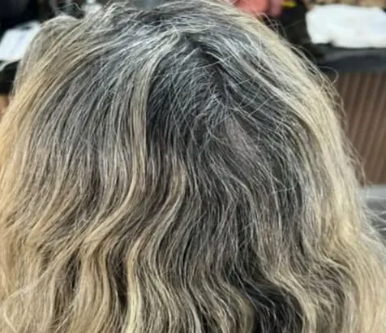

Morena iluminada, mechas e retoque.
Três jeitos de iluminar o cabelo. Veja os resultados e peça o seu pelo WhatsApp.
Morena iluminada
Base escura com fios dourados e cobre, que aparecem ainda mais nas ondas.
Quero morena iluminada


Retoque de mechas


Qual cor é a sua?
Toque em uma opção e a mensagem abre pronta no WhatsApp.